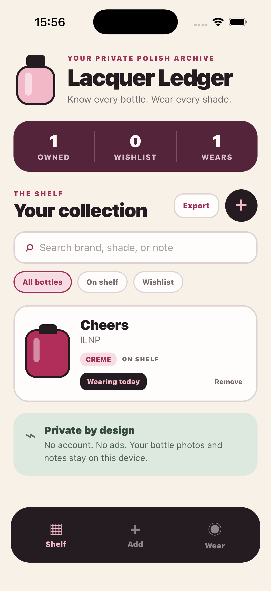
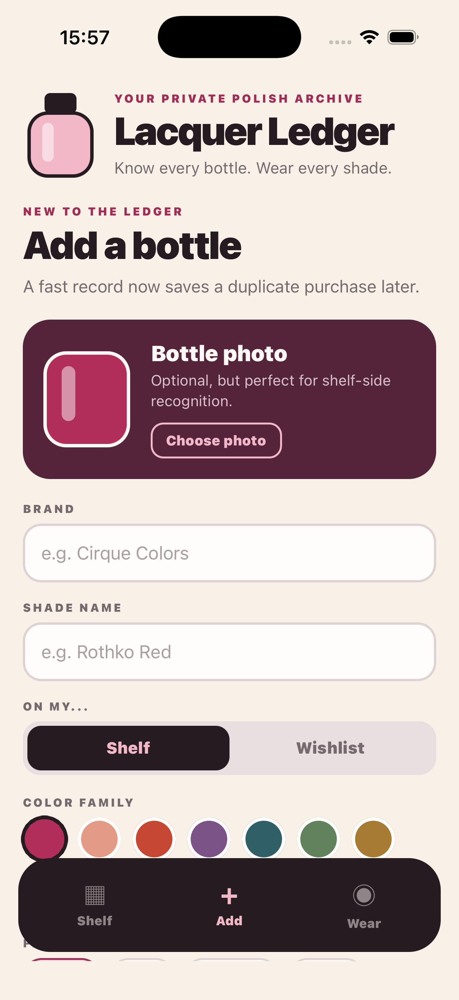
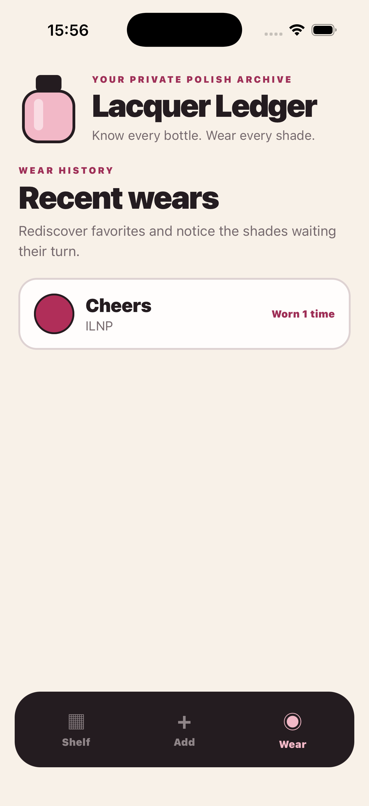

Build your shelf
Save brand, shade, finish, color family, notes, and an optional bottle photo.
Your private polish archive
A focused home for the polish you own, the shades you want, and the favorites waiting to be rediscovered.
$4.99 once · No account · No ads · No subscription
Built for real collections
Lacquer Ledger turns a growing polish drawer into a searchable collection you can actually use.
Save brand, shade, finish, color family, notes, and an optional bottle photo.
Get warned when the same brand and shade are already in your collection.
Log each wear and see recent choices, wear counts, and shades waiting their turn.
Simple by design



Private by design
Lacquer Ledger has no account, backend, advertising, or analytics. Bottle details and photos stay on your iPhone unless you choose to export them.
Read the privacy policyQuestions
Everything you need to manage, back up, and understand your collection.
Visit support →In a local database inside the app on your iPhone. Lacquer Ledger does not operate a server.
Yes. Export your collection as a CSV file and save it wherever you choose through the iOS share sheet.
No. Lacquer Ledger is a one-time purchase.